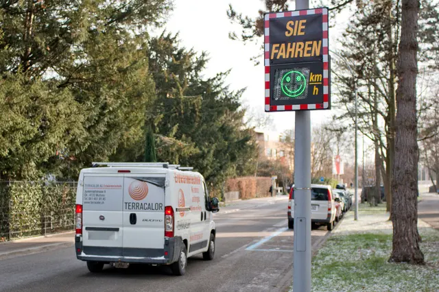

Wettbewerb: Explorative Datenanalyse
Daten aufbereiten, analysieren und visualisieren mit R The R Bootcamp |  |

from bazonline.ch
Überblick
Beweist eure Datawrangling- und visualisierungsskills in einem Wettbewerb zur Explorativen Datenanalyse. Grabt tief in einen Datensatz um die beste, entscheidungsrelevanteste Grafik zu erstellen und damit einen Gutschein für Süsses zu gewinnnen.
Der Wettbewerb endet in…
Auftrag
Smiley-Geschwindigkeitsanzeigen sind ein präventives Mittel zur Geschwindigkeitsreduktion im Strassenverkehr. Die Anzeigen zeigen den Autofahrerinnen und Autofahrern an, ob sie die erlaubte Höchstgeschwindigkeit einhalten oder überschreiten. In Basel werden neu seit 2023 an 75 Standorten abwechslungsweise 20 Geräte zur Messung und Anzeige der Geschwindigkeit eingesetzt. Sie messen einen Monat die Geschwindigkeiten mit ausgeschalteter Anzeige. Dann werden Smiley-Geschwindigkeitsanzeigen für drei Monate aktiv geschaltet. Im Anschluss messen die Geräte nochmals einen Monat mit ausgeschalteter Anzeige.
Eure Aufgabe ist es, zu analysieren, wo die Anzeigen am dringendsten benötigt werden und ob die Anzeigen einen Effekt bei den Verkehrsteilnehmer:innen zeigen.
Die beste Visualisierung bekommt einen kleinen Preis von uns. Kriterien dafür sind insbesondere: der Erkenntnisgewinn aus der Visualisierung für die Verkehrssicherheit und den weiteren Einsatz der Smiley-Geschwindigkeitsanzeigen. Daneben aber auch die Klarheit und Verständlichkeit der erstellten Grafik.
Quellenangabe Datensatz: https://data.bs.ch/explore/dataset/100277/
Lizenz Datensatz: https://creativecommons.org/licenses/by/3.0/ch/deed.de
Weiterführende Informationen: https://www.jsd.bs.ch/nm/2023-start-des-betriebs-der-neuen-praeventiven-smiley-geschwindigkeitsanzeigen---ab-maerz-2023-aktiv-jsd.html
A - Vorbereitung
Gehe zum Tab “Datensätze” und lade den
smiley.csvDatensatz mit Rechtsklick -> “Ziel speichern unter” herunter, gib der Datei den Namensmiley.csv. Kopiere die Datei dann in den Ordner1_Datain deinemTheRBootcampOrdner.Öffne dein
TheRBootcampR project in RStudio.Öffne ein neues R Skript. Schreibe deinen Namen, das Datum und “Explorative Datenanalyse Wettbewerb” als Kommentare an den Anfang des Skripts.
Speichere das neue Skript unter dem Namen
wettbewerb_practical.Rim2_CodeOrdner.Lade das
tidyversePaket und alle weiteren Pakete, die du verwenden möchtest.Lade den Datensatz
smiley.csv.
B - Wettbewerbsregeln
Das Ziel des Wettbewerbs ist es die schönste, überzeugenste, entscheidungsrelevanteste Grafik zu erstellen, die beantwortet auf welche Standorte die Smiley-Anzeigen fokussieren sollten und ob sie überhaupt etwas bringen.
Am Wettbewerb teilzunehmen ermöglicht dir die Chance, einen Gutschein zu gewinnen.
Du nimmst am Wettbewerb teil indem du deine beste Grafik im
.pngFormat und das zugehörige R Script einreichst.Vor dem Einreichen, speichere deine Grafik mittels
ggsave()(siehe code) und benenne die Datei mit einem von dir ausgewählten Pseudonym. Benutze das Pseudonym ebenfalls im Namen der.RSkriptdatei.Reiche deine Beitrag ein indem Du dein Skript, eine Abbildung, und ein selbstgewähltes Pseudonym an unsere baselrbootcamp@gmail.com Mail Adresse schickst.
Jeder Beitrag wird beurteilt durch eine Jury bestehend aus den Kursteilnehmern. Der Beitrag mit den meisten Punkten gewinnt.
Wichtig: Entscheidend für den Erfolg ist nicht nur die Ästhetik der Grafik, sondern auch die gewonnenen Erkenntnisse die darin dargestellt sind. Dafür kann es hilfreich sein, eigene Transformationen und Berechnungen auf Basis des Datensatzes anzustellen.
Rating
Bitte rated die einzelnen Beiträge über diesen Link (noch nicht aktiv).
Beispiel
require(tidyverse)
smiley <- read_csv("1_Data/smiley.csv")
# Erstelle plot
mein_plot <- smiley %>%
filter(phase == "Gesamt") %>%
mutate(zu_schnell = case_when(
median_tempo >= tempolimit ~ ">= 50%",
TRUE ~ "< 50%",
)) %>%
ggplot(aes(x = tempolimit, y = median_tempo)) +
geom_point(aes(color = zu_schnell), size = 3) +
labs(title = "An diesen Orten fahren 50% der Leute zu schnell") +
theme_classic()
# Speichere plot als png
ggsave(filename = 'plot_DOZENTEN.png',
plot = mein_plot,
units = "in",
width = 7,
height = 5)Datensätze
| Datei | Zeilen | Spalten |
|---|---|---|
| smiley.csv | 68 | 9 |
Variablenbeschreibungen smiley.csv
| Name | Bedeutung |
|---|---|
phase |
Messphase: Vormessung (nur Messung, keine Anzeige), Betrieb (Messung inkl. Feedback an Verkehrsteilnehmer:innen), Nachmessung (nur Messung, keine Anzeige), Gesamt (alle drei Phasen zusammen) |
strassenname |
Name der Strasse wo die Messung stattfand. |
start_phase |
Datum an dem diese Messphase anfing. |
median_tempo |
Median der gemessenen Geschwindigkeiten vorbeifahrender Fahrzeuge in km/h. |
tempo_85 |
85. Perzentil der Geschwindigkeiten vorbeifahrender Fahrzeuge in km/h. |
tempolimit |
Geltendes Temolimit in km/h am Messort. |
anzahl_messungen |
Anzahl der Messungen in dieser Phase an diesem Standort. |
link_einzelmessungen |
Link zu einem Datensatz mit detaillierten Einzelmessungen dieses Standorts in dieser Phase. |
geopunkt |
Länge- und Breitegrade des Messstandorts. |